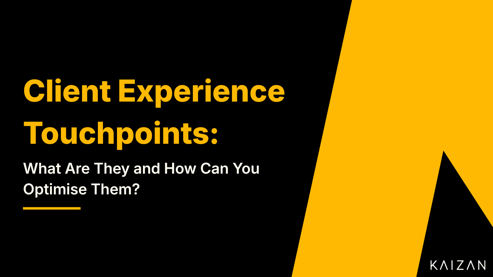

Client Experience Touchpoints: What Are They and How Can You Optimise Them?

The concept of a touchpoint comes up so often in client success that it can easily be taken for granted. But it’s an important area to get right and it’s vital for a team to have a shared understanding of what it means.
Touchpoints are also one of the most important opportunities in business, a chance to improve client relationships and the outcomes arising from them.
In this article, we’ll cover:
What is a client experience touchpoint?
Examples of client touchpoints.
How to optimise client touchpoints.
Why should you optimise client touchpoints?
What is a Client Experience Touchpoint?
A touchpoint refers to the various interactions and points of contact that a client has with a business or organisation throughout their journey, from initial awareness to post-purchase support. These touchpoints can occur through various channels and can be physical, such as visiting a store, or digital, such as interacting with a website.
Optimising client experience touchpoints is crucial for building positive relationships with clients, increasing customer satisfaction, and fostering long-term loyalty. On a deeper level, touchpoints are an opportunity for you to influence clients and prospective clients. A chance to share information, offer guidance, create a positive impression, or even drive them towards a purchase of your products or service.
The client journey isn’t just the time that a client spends using your services. It’s their whole experience, from becoming aware of a need you can fulfil through to making a purchase and beyond. Each touchpoint your company has along that journey presents an opportunity to make a positive impression on the client, drive purchases, and build loyalty.
A company should therefore aim to optimise its touchpoints for the best possible client experience. This can be done by ensuring that touchpoints are convenient, easy to use, and provide value to the client.
Examples of Client Touchpoints
Every time and place that a client might interact with your company is a touchpoint, whether or not you’re active in the moment. Touchpoints include:
Website
Blogs
Social channels
Emails/newsletters
Referrals
Sales calls and product demos
Self-service sign-ups
Onboarding
Ongoing client support.
Every one of these interactions has the potential to do good or harm to your relationship with the client. Whether they’re reading an article by your CEO, scrolling through your Instagram profile, or talking to one of your support team, the client will adjust or affirm their opinion of you. If you don’t shape these touchpoints, then you leave that impression out of your control.
How to Optimise Client Touchpoints
If you want to optimise customer experience touchpoints, there are a few key things you can do:
Make sure your touchpoints are consistent
Your customers should have a consistent experience with your brand regardless of which touchpoint they interact with. Ensure you create consistency in messaging, branding, and service quality across all touchpoints. This creates a cohesive and seamless experience, regardless of how clients interact with your business.
Create style guides for everyone producing materials for your company, whether that’s writing, doing visual design, or making outputs in other formats, and make sure these are followed. This is your company’s voice, it should speak loudly and clearly.
Consistency also means providing the same high-quality client service regardless of where clients contact you. How formal do you want your team to be? How should they present themselves? How will they explain your products? Being consistent is a way of ensuring quality and removing tension from the client experience.
Pay attention to the details
The details matter when it comes to client experience touchpoints. Whether consciously or subconsciously, the little things add up.
Details like the way your website is designed, the tone of your social media posts, and how quickly you respond to client service inquiries can all make a big difference in the way customers perceive your brand. It can be tempting to simply accept the first option you’re offered if a detail wouldn’t matter to you, but there will be clients to whom it is important.
Paying attention to the details will help you to maintain consistency and create a more positive client experience.
Make sure your touchpoints are client-centric
Good design is about getting out of your own head and thinking about how your audience will receive what you’re creating. This isn’t just a matter of artistic thinking, but the essence of business design, showing empathy and forging a connection by building something to suit your clients. Client experience touchpoints should be designed with your clients in mind.
This means making it easy for them to find the information they need, providing multiple ways for them to contact you, and offering a positive and helpful client service experience.
When your touchpoints are clients-centric, it will show in the way your clients interact with your brand. If they are satisfied, then you’re getting it right. If they seem frustrated, then it’s time to make a change.
Use data to improve your touchpoints
But how will you know how clients feel about your touchpoints?
By listening to them.
Actively seek client feedback at different touchpoints to understand their pain points and satisfaction levels. Use this feedback to improve your offering and services continually. This doesn’t mean recording every conversation and asking for feedback at every turn, it means using the information you have to hear the things that clients aren’t saying, as well as what they are sharing.
Data can be a valuable tool for improving your client experience touchpoints. Keep track of how clients interact with your brand. Use analytics to identify areas for improvement; which touchpoints do they complain about or praise? Which ones do they complete and which do they give up on? Which do they interact with just before giving up on your services or before purchasing an upgrade?
Use these insights to make changes to your touchpoints and improve the overall client experience. Even if your touchpoints please clients, you need to keep finding ways to do better, as your competitors will be trying to outcompete you. The only way to stay on top is to repeatedly provide the best possible experience through a process of continuous improvement.
Optimising client experience touchpoints is essential to creating a positive client experience. By keeping these tips in mind, you can make sure your touchpoints improve the way clients perceive your brand.
But why is that so important?
Why Should You Optimise Client Touchpoints?
There are many benefits to optimising client touchpoints. Some of the most important reasons include:
To improve client satisfaction
Every client touchpoint is an opportunity to create a positive impression and improve client satisfaction. Clients form an opinion of your company based on these touchpoints, and you need it to be good. By optimising touchpoints, you can ensure that every interaction is positive and helpful, which can lead to higher client satisfaction levels.
To increase client loyalty
Optimising client touchpoints can lead to increased client loyalty. When clients have positive experiences at every touchpoint, they are more likely to continue doing business with a company. Even a single negative experience can disrupt this, as it makes the client wonder what other failings they’ve missed and paints ordinary interactions in a different light. To foster loyalty, you need to provide good experiences not just at key moments but every time they interact with you.
To reduce client churn
In addition to increasing client loyalty, optimising touchpoints can reduce client churn. Negative experiences give clients a reason to reconsider the business they do with you, and so make them open to being poached by your rivals. When clients have positive experiences, they are less likely to switch to a competitor.
To improve conversion rates
Touchpoints affect your relationships with prospective clients as well as the ones you’re already working with. Positive experiences will encourage these prospects to make the jump to working with you, because of their positive impression of you and your company. As a result, optimising client touchpoints can lead to improved conversion rates. When people have positive experiences, they are more likely to make a purchase, sign up for a service, or listen to your sales pitch.
To increase brand awareness and equity
Finally, optimising client touchpoints can lead to increased brand awareness and equity. Clients talk about their experiences with companies, and a lot of those conversations take place online. The things that they say about you, not just to their friends but to the wider circles who see their online comments, will raise awareness of your brand. If you want that awareness to be positive, then you need the touchpoints shaping it to be positive. People like to share good experiences, so give them something to talk about.
The Whole Client Experience
Client preferences and expectations evolve over time, so businesses must stay attuned to these changes and adapt their strategies accordingly. By providing a seamless and delightful experience at every touchpoint, you can foster strong, long-lasting relationships with your clients and gain a competitive advantage.